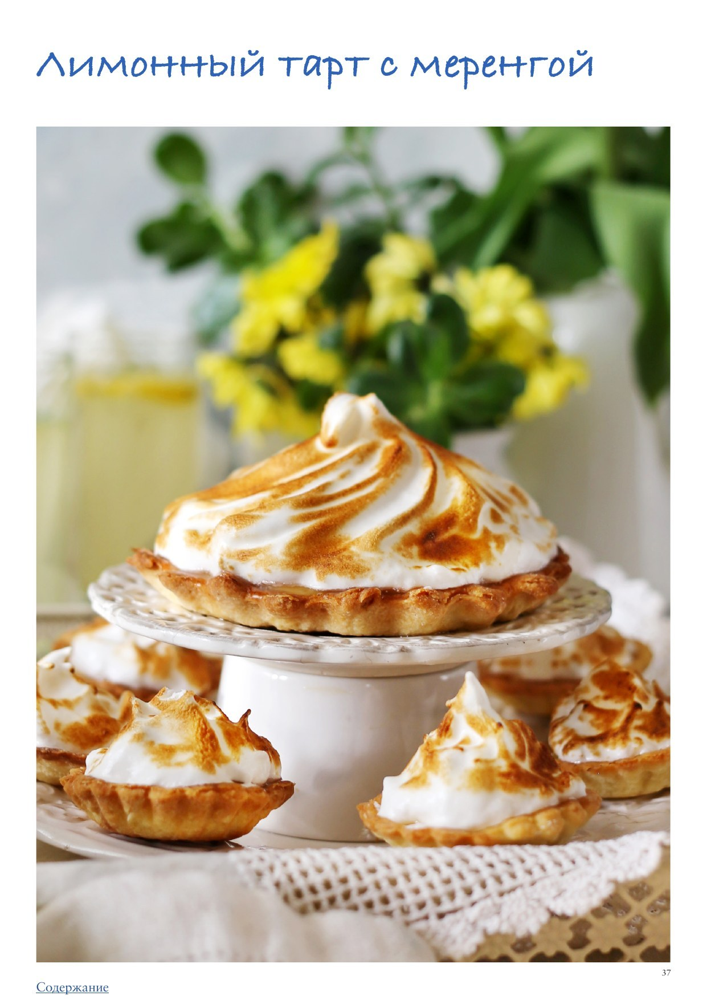

Один из «главных героев» фильма «Тост», в приготовлении которого яростно соревновались юный Найджел и его мачеха
огромный, с толстым слоем лимонного курда и воздушной шапкой меренги. Приручить его, понять все тонкости приготовления и узнать секрет идеального рецепта — на экране развернулась почти детективная история, триллер и шекспировская трагедия в одном флаконе. Наш рецепт — не копия того самого тарта, но очень близкий и не менее замечательный. Чтобы приготовить этот лимонный тарт с меренгой, не обязательно обладать сверхспособностями, и можно разбить процесс на несколько этапов: заранее приготовить тесто (оно может храниться в холодильнике минимум сутки), отдельно приготовить лимонный курд (он тоже может подождать вместе с тестом), а уже в день Х испечь основу для тарта и приготовить меренгу. Готовую меренгу на тарте можно подпалить кулинарной газовой горелкой, поставить на 5 минут в духовку под разогретый гриль или оставить как есть, белоснежным облаком. Из инструментов вам дополнительно понадобится кулинарный термометр, чтобы измерить температуру сиропа, которым мы будем заваривать взбитые белки, а также, по желанию, чтобы все было идеально, температуру курда. Тарт можно приготовить в одной форме или сделать небольшие порционные тарталетки. Масло и яйца для основы должны быть холодными. Сливочное масло перед использованием можно на 20 минут положить в морозилку, а затем нарезать кубиками перед добавлением в комбайн. Если есть возможность, то и чашу с насадкой лучше тоже охладить.